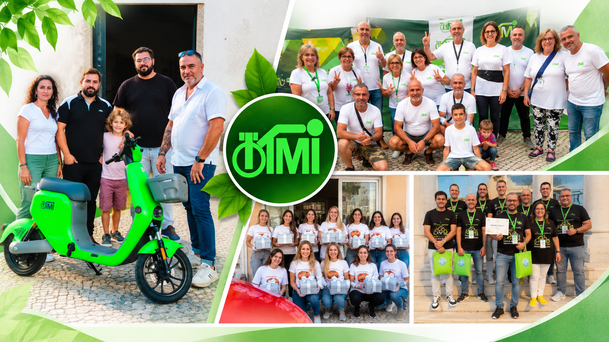
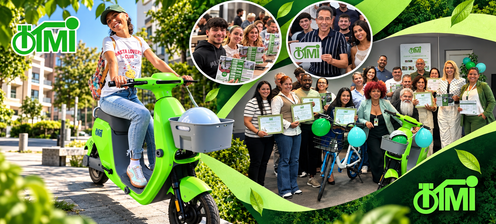
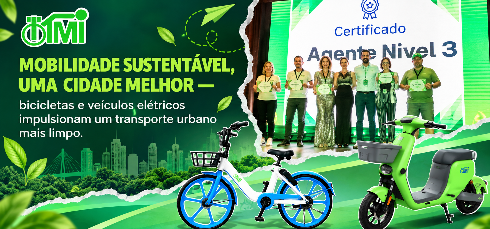

EVENTOS E EXPERIÊNCIAS
Portugal já faz parte desta história.
O lançamento em Lisboa reuniu parceiros, familiares e convidados para conhecerem as bicicletas, a tecnologia e as pessoas que fazem parte da TIMI.



Encontros, experiências e conteúdos que aproximam as pessoas do projeto TIMI.
O lançamento em Lisboa reuniu parceiros, familiares e convidados para conhecerem as bicicletas, a tecnologia e as pessoas que fazem parte da TIMI.



Entrevistas, encontros e momentos com pessoas que já participam e acompanham o crescimento do projeto em Portugal.
Durante o lançamento da TIMI em Portugal, a repórter Susana Pinto conversou com o Embaixador TIMI Francisco Roberto sobre as bicicletas partilhadas, o evento e a sua experiência no projeto.
A comunidade ajuda novos participantes a compreender a aplicação, acompanhar os códigos, conhecer eventos e esclarecer dúvidas durante o percurso.